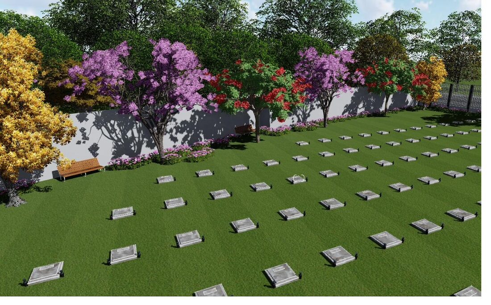
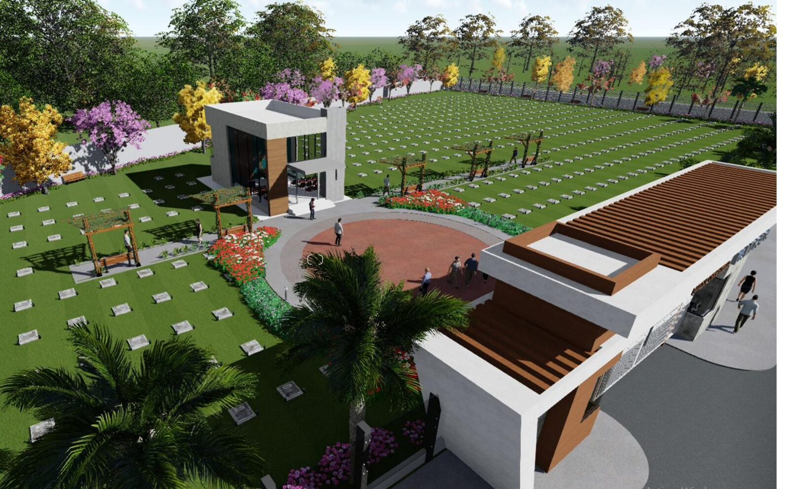
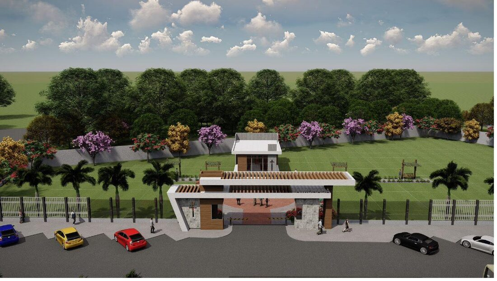
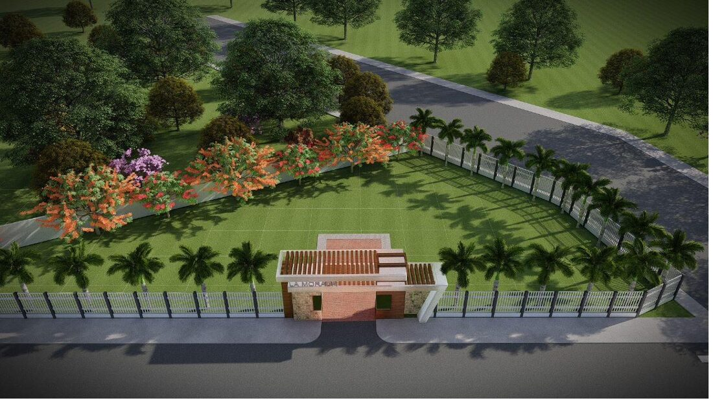

Espacios de descanso
Lugares serenos, rodeados de árboles nativos y flores, pensados para reunirse y recordar en calma.
Solicitar informaciónEspacios de descanso rodeados de jardines, donde reunirse en familia y recordar con paz. Le acompañamos, con calidez y sin apuros.

Recibe la minuta de transferencia al finalizar el pago. Todo claro, desde el primer día.
Planes con 0% de interés y hasta 5 años de plazo, sin garantes ni garantías. Fácil y sin trámites.
El primer año de mantenimiento es gratuito. Jardines y áreas comunes siempre bien atendidos.
Ya sea que estés planificando con tiempo o necesites resolver algo hoy, te acompañamos en cada paso con respeto y cercanía.

Lugares serenos, rodeados de árboles nativos y flores, pensados para reunirse y recordar en calma.
Solicitar informaciónDecidir con tiempo es un gesto de amor: le da tranquilidad a tu familia y evita cargas en momentos difíciles.
Conocer los planesAdquirir un espacio con anticipación permite pagarlo con calma y dejar todo previsto. Así, cuando llegue el momento, tu familia solo tendrá que acompañarse.
Eliges tu espacioEl sector y el lugar que prefieras para tu familia.
Pagas en cuotas planificadasFinanciamiento directo, a tu ritmo, con 0% de interés.
Recibes tu minutaAl completar el pago, el respaldo legal de tu adquisición.
“En la casa de mi Padre muchas moradas hay.”Juan 14:2
El parque está organizado en tres sectores. Explora el plano interactivo para ver el estado de cada espacio en tiempo real.
Nuestro sector principal, ubicación privilegiada dentro del parque.
Espacios serenos entre jardines, con excelente acceso.
Una opción cálida y accesible, rodeada de naturaleza.
Jardines cuidados, capilla, áreas de descanso y seguridad permanente. Un entorno sereno para visitar con tranquilidad.

Ingreso principal
Vista del parque¿No encuentras lo que buscas? Con gusto te atiende una persona real.
Hacer una consultaEliges el espacio que prefieras y lo pagas en cuotas planificadas a tu ritmo, con financiamiento directo. Al completar el pago recibes la minuta de transferencia que respalda tu adquisición.
No. El financiamiento es directo con nosotros, hasta 5 años de plazo, sin garantes ni garantías y con 0% de interés anual.
El trámite es sencillo. Un asesor te indicará los documentos según el plan que elijas y te acompañará en cada paso, sin complicaciones.
El primer año de mantenimiento es gratuito. Nos encargamos del cuidado de jardines y áreas comunes para que el parque siempre luzca sereno.
En la zona noreste de Santa Cruz de la Sierra, Tercer Anillo Externo entre Av. Mutualista y Av. Paragua, a solo 300 m del Mercado “El Carmen” y de la parada de la línea 104-C.
Encontramos un lugar tranquilo y bien cuidado. El acompañamiento fue humano en todo momento.
Planificar con tiempo nos dio paz. Todo fue claro y sin presiones desde el inicio.
Los jardines transmiten calma. Es un espacio digno para recordar a quienes amamos.
Testimonios ilustrativos. Se publicarán experiencias reales de familias con su autorización.
Déjanos tus datos o escríbenos por WhatsApp. Un asesor te responderá con la información que necesites, a tu tiempo.